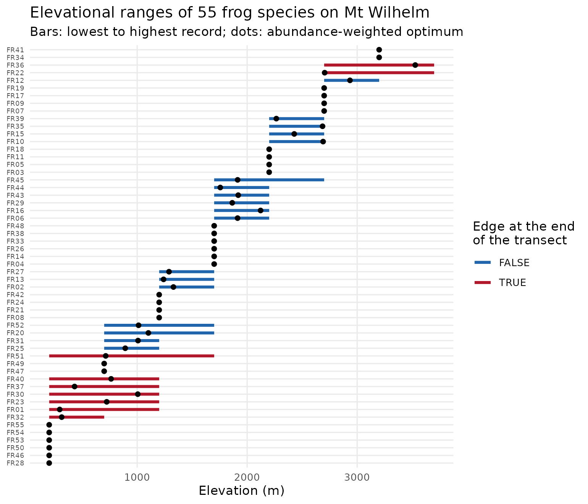

As the climate warms, species on mountains move upslope. tidydiversity 0.3.0 adds functions to describe where species sit on a gradient, to measure how far they moved between a historical survey and a resurvey, and to check whether a model predicted those moves.
| Function | What it does |
|---|---|
range_edges() |
Lower and upper edges, midpoint, breadth and abundance-weighted optimum of each species, with flags for edges cut off by the ends of the transect |
range_shift_resurvey() |
Shifts of each edge, midpoint and optimum between two surveys; species lost and gained |
range_shift_test() |
Mean shift across species, bootstrap interval and exact sign test |
range_shift_expected() |
Shift that would keep a species at the same temperature: warming / lapse rate |
range_shift_validate() |
Scores predicted against observed shifts: bias, error, correlation, calibration and tracking |
Ranges of frogs on a New Guinea mountain
png_frogs holds frog counts at eight elevations from 200
to 3,700 m on Mt Wilhelm (Dahl et al. 2024).
library(tidydiversity)
library(ggplot2)
edges <- range_edges(png_frogs, gradient = elevation, abundance = abundance)
edges
#> # A tibble: 55 × 10
#> species lower upper midpoint breadth optimum n_sites abundance
#> <chr> <int> <int> <dbl> <int> <dbl> <int> <int>
#> 1 FR01 200 1200 700 1000 296. 3 293
#> 2 FR02 1200 1700 1450 500 1330. 2 27
#> 3 FR03 2200 2200 2200 0 2200 1 32
#> 4 FR04 1700 1700 1700 0 1700 1 108
#> 5 FR05 2200 2200 2200 0 2200 1 137
#> 6 FR06 1700 2200 1950 500 1913. 2 47
#> 7 FR07 2700 2700 2700 0 2700 1 40
#> 8 FR08 1200 1200 1200 0 1200 1 133
#> 9 FR09 2700 2700 2700 0 2700 1 13
#> 10 FR10 2200 2700 2450 500 2690. 2 104
#> # ℹ 45 more rows
#> # ℹ 2 more variables: truncated_lower <lgl>, truncated_upper <lgl>
edges <- edges[order(edges$midpoint, edges$lower), ]
edges$species <- factor(edges$species, edges$species)
edges$cut_off <- edges$truncated_lower | edges$truncated_upper
ggplot(edges, aes(y = species)) +
geom_segment(aes(x = lower, xend = upper, colour = cut_off), linewidth = 1.2) +
geom_point(aes(x = optimum), size = 1.6) +
scale_colour_manual(
"Edge at the end\nof the transect",
values = c(`FALSE` = "#2166AC", `TRUE` = "#B2182B")
) +
labs(
x = "Elevation (m)", y = NULL,
title = "Elevational ranges of 55 frog species on Mt Wilhelm",
subtitle = "Bars: lowest to highest record; dots: abundance-weighted optimum"
) +
theme_minimal(base_size = 11) +
theme(axis.text.y = element_text(size = 6), panel.grid.minor = element_blank())
Species whose edges lie at 200 m or 3,700 m may range beyond the
transect. Their edges cannot show a shift, so
range_shift_test() and range_shift_validate()
leave them out by default.
How far should species move?
The shift that would keep a species at the same temperature is the warming divided by the lapse rate. With the 0.76 degrees C of warming measured on Mt Karimui between 1965 and 2012 and a lapse rate of 5.1 degrees C per km:
range_shift_expected(warming = 0.76, lapse_rate = 5.1)
#> [1] 149.0196Did the models predict the climb?
With a historical survey and a resurvey,
range_shift_resurvey() gives each species’ shift and
range_shift_validate() scores predictions against it. The
figure below summarises a hindcast of 136 bird species resurveyed on Mt
Karimui, Papua New Guinea, in 1965 and 2012 (Freeman and Class Freeman
2014), using climate models from the companion package tidymapr.
Tracking is the observed over the predicted mean shift: 1 means the
birds kept pace with the warming.

With the regional warming estimate (0.39 degrees C) the birds seemed to outpace the climate by half again. With the warming measured on the mountain itself (0.76 degrees C) their upper limits tracked it: every interval based on local warming includes 1. The models predict the community’s mean shift well but each species’ shift only weakly.
The code pattern, for your own resurvey:
shifts <- range_shift_resurvey(survey_1965, survey_2012,
gradient = elevation, abundance = count
)
range_shift_test(shifts, seed = 1)
range_shift_validate(shifts,
data.frame(species = shifts$species, shift = range_shift_expected(0.76, 5.1)),
seed = 1
)References
Dahl, C., Richards, S. J., Basien, I., Mungkaje, A. J. and Novotny, V. (2024). Local and regional diversity of frog communities along an extensive rainforest elevation gradient in Papua New Guinea. Biotropica, 56, 90-97.
Freeman, B. G. and Class Freeman, A. M. (2014). Rapid upslope shifts in New Guinean birds illustrate strong distributional responses of tropical montane species to global warming. PNAS, 111, 4490-4494.